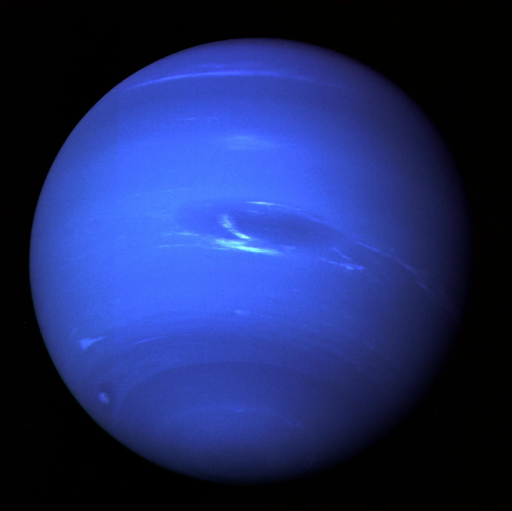

Facts:
One day on Neptune takes about 16 hours (the time it takes for Neptune to rotate or spin once). And Neptune makes a complete orbit around the Sun (a year in Neptunian time) in about 165 Earth years (60,190 Earth days).

Fun Facts:
- Neptune has 14 known moons.
- Triton is the only large moon in the solar system that circles its planet in a direction opposite to the planet's rotation (a retrograde orbit), which suggests that it may once have been an independent object that Neptune captured.